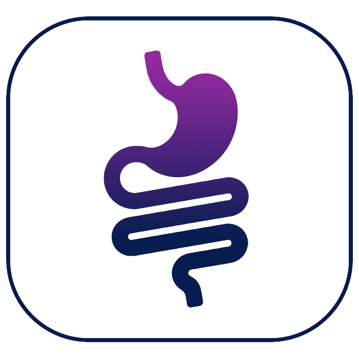
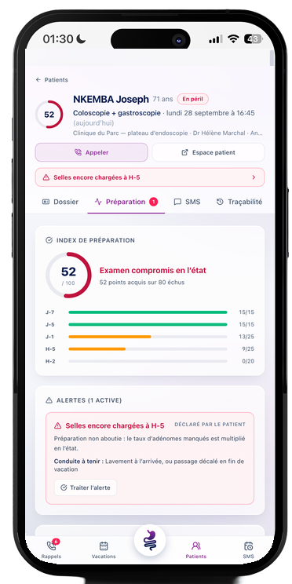
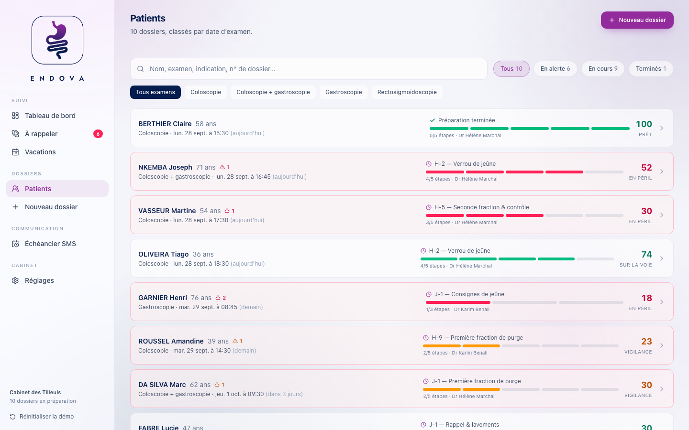
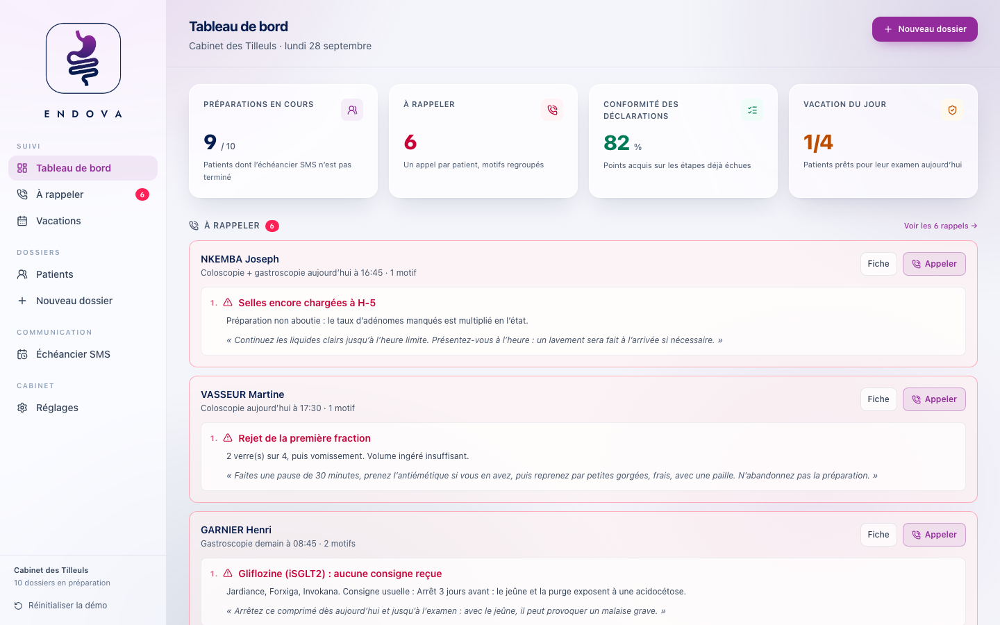
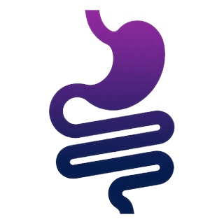

Purge · 6 SMS
Coloscopie
Traitements et purge à J-7, régime sans résidu à J-3 (J-5 en préparation renforcée), contrôle des arrêts à J-2, minuteur guidé pour chaque fraction, échelle de clarté des selles à H-5, verrou de jeûne à H-2.
Endova suit chaque patient de votre cabinet par SMS, de J-7 à H-2, et vous signale l'écart tant qu'il est rattrapable.


Il n'a rien caché. Personne ne lui a demandé.
des coloscopies jugées mal préparées
Score de Boston insuffisant
de préopératoire par patient
De J-7 à H-2, délivrés d'un seul scan
rattrapés chaque mois
Pour 30 examens par semaine, voir le calcul plus bas
Le préopératoire, jour par jour
L'échéancier d'une coloscopie, de J-7 au jour J. Faites glisser le curseur pour voir ce qu'Endova demande au patient, et ce qu'il vous remonte. Le jour J, Endova passe la main.
Le point de rupture
J'ai réussi la première dose, puis seulement quelques gorgées de la seconde avant des nausées terribles.Ce que les patients écrivent, dans leurs mots, sur les forums de santé
La seconde fraction est celle qui nettoie le côlon droit, là où se cachent les adénomes plans. Endova découpe la prise en verres espacés, impose la pause entre chacun, et déclenche le protocole de compensation dès qu'un patient déclare un rejet.

Un échéancier par examen
À la création du dossier, votre secrétariat choisit l'examen. Endova en déduit les messages, les heures d'envoi et les questions à poser. Tout le préopératoire, rien après : le jour J, Endova passe la main.
Purge · 6 SMS
Traitements et purge à J-7, régime sans résidu à J-3 (J-5 en préparation renforcée), contrôle des arrêts à J-2, minuteur guidé pour chaque fraction, échelle de clarté des selles à H-5, verrou de jeûne à H-2.
Purge · 6 SMS
Le même échéancier, sous la même anesthésie. Le bilan d'anémie ferriprive rappelle l'arrêt du fer oral sept jours avant, que les patients oublient presque toujours.
Jeûne · 4 SMS
Pas de purge, tout se joue sur l'estomac. Heure limite des solides, liquides clairs jusqu'à H-2, et une attention particulière aux patients sous GLP-1, dont la vidange gastrique est ralentie.
Lavements · 4 SMS
Deux lavements le matin même, à une heure d'intervalle. Endova vérifie la veille que le patient les a achetés, puis lui demande le résultat.
Ce que voit le cabinet
Un geste pour les SMS : le bouton Endova délivre d'un scan tous les messages arrivés à échéance, chaque patient à son étape. Puis une liste d'appels : un patient, un appel, ses motifs regroupés et la phrase à dire. Votre secrétariat n'improvise pas.

La fiche patient
L'identité, l'examen et le statut restent en haut de l'écran. En dessous, chaque onglet répond à une seule question.
Qui est le patient, quel examen ?
Identité, indication, anesthésie, préparation prescrite. Traitements à risque avec leur consigne usuelle, facteurs de préparation insuffisante, check-list pré-examen : consultation d'anesthésie, consentement, ordonnance, bon d'admission.
Où en est-il ?
Index de préparation sur 100, alertes avec leur conduite à tenir, détail de chaque déclaration. Projection du Boston prévisionnel par segment colique.
Qu'a-t-il reçu ?
Chaque message, programmé ou parti, avec son statut : délivré, lien ouvert, répondu. Renvoi en un clic, messages libres à partir de modèles.
Que pouvez-vous prouver ?
Le journal horodaté du dossier : envois, ouvertures, déclarations, appels, actions du cabinet. Exportable et imprimable.
Vos outils restent les vôtres
Agenda, dossier médical, messagerie : votre cabinet fonctionne, et votre secrétariat a ses habitudes. Endova vient se poser à côté, sans rien déplacer. Il reprend les informations que vous saisissez déjà, et s'occupe de ce qu'aucun de vos outils ne fait : accompagner le patient jusqu'au jour de son examen.
Chez vous, rien ne bouge

Endova complète
Le patient répond
Depuis son téléphone, sans application ni mot de passe.
1 · Rien ne change
Vos rendez-vous restent dans votre agenda, vos comptes rendus dans votre dossier médical. Personne n'apprend un nouveau logiciel pour prescrire un examen.
2 · Pas de double saisie
Date d'examen, lieu, coordonnées, traitements : à la mise en service, nous regardons avec vous comment récupérer ces informations depuis les outils que vous utilisez déjà, pour ne pas vous les faire taper deux fois.
3 · Le suivi en plus
Endova ajoute ce qui manquait : les questionnaires SMS de J-7 au jour J, les alertes, la traçabilité. Les réponses du patient reviennent vers vous, prêtes à être versées à son dossier.
La preuve de l'information délivrée
Consigne d'arrêt d'un anticoagulant, heure limite de jeûne, préparation prescrite : chaque information est horodatée au moment où elle part, et chaque réponse du patient au moment où il la donne. Une pièce que vous versez au dossier, pas une reconstitution de mémoire.
Journal · NKEMBA Joseph
Ce que le préopératoire vous rapporte
Un examen mal préparé se refait : le créneau est perdu, le patient reconvoqué, sa préparation recommencée. Réglez les curseurs sur votre activité.
Rattrapé chaque mois
4 160 €
Soit 49 920 € par an — l'offre Cabinet remboursée 14 fois.
Estimation indicative. Le taux de rattrapage dépend de votre patientèle : nous le mesurons avec vous sur vos premières vacations.
Tarifs
Par cabinet, sans engagement de durée. SMS inclus, mise en service accompagnée.
Essentiel
Le praticien installé seul
149 € HT / mois
Facturé chaque mois
Le plus choisi
Cabinet
Le cabinet de groupe
290 € HT / mois
Facturé chaque mois
Le plus complet
Signature
Les cabinets à fort volume
490 € HT / mois
Facturé chaque mois
Tarifs hors taxes, par cabinet. Au-delà du volume inclus, les examens supplémentaires sont facturés à l'unité.
Les questions qu'on nous pose
Le lien s'ouvre dans leur navigateur, sans application et sans mot de passe : l'année de naissance suffit. Et si un patient n'ouvre pas son premier lien, Endova vous le signale 36 heures plus tard, pour que votre secrétariat l'appelle avant qu'il ne soit trop tard.
Non. Endova ne remplace ni votre agenda ni votre dossier médical : il travaille à côté. Nous étudions avec vous, à la mise en service, la façon la plus simple de reprendre les informations que vous saisissez déjà, pour que votre secrétariat garde exactement ses habitudes.
Votre secrétariat, d'un geste : le bouton Endova lance un scan qui délivre tous les messages arrivés à échéance, chaque patient à sa propre étape. Un patient opéré dans deux jours reçoit son SMS de J-2, un autre dans une semaine celui de J-7. Chaque envoi est horodaté dans son dossier.
La création d'un dossier prend deux minutes, à la sortie de consultation. Ensuite, une file d'appels par jour, triée par urgence : chaque patient y apparaît une fois, avec tous ses motifs et la phrase à lui dire. Les patients conformes ne génèrent aucun appel.
Ozempic, Wegovy, Trulicity, Mounjaro : la vidange gastrique ralentie expose à l'inhalation à l'induction. Endova le repère dès la création du dossier, rappelle de prévenir l'anesthésiste et impose au patient les liquides clairs la veille. Même logique pour les gliflozines, à arrêter trois jours avant.
Non. Endova rappelle les consignes usuelles des sociétés savantes, mais c'est votre prescription qui fait foi. Préparation, schéma de prise, préparation renforcée : tout se règle patient par patient, et l'offre Signature adapte les messages à vos propres protocoles.
Endova ne pose aucun diagnostic. Il transmet des déclarations de patients et signale des écarts. Dès qu'une de ses recommandations est suivie en pratique, la question du règlement européen se pose, et elle doit être arbitrée avant toute mise en service réelle. Nous le disons plutôt que de l'éviter.
Une déclaration vaut mieux qu'un silence. Un écart signalé se rattrape, avec un lavement à l'arrivée ou un passage décalé en fin de vacation. Un écart tu se découvre pendant l'examen.
Parlons-en
Dites-nous combien d'examens votre cabinet programme par semaine : nous vous montrons, sur vos propres vacations, ce que l'échéancier changerait.
Ce bouton ouvre votre logiciel de courrier avec le message prérempli. Rien n'est envoyé à votre insu.